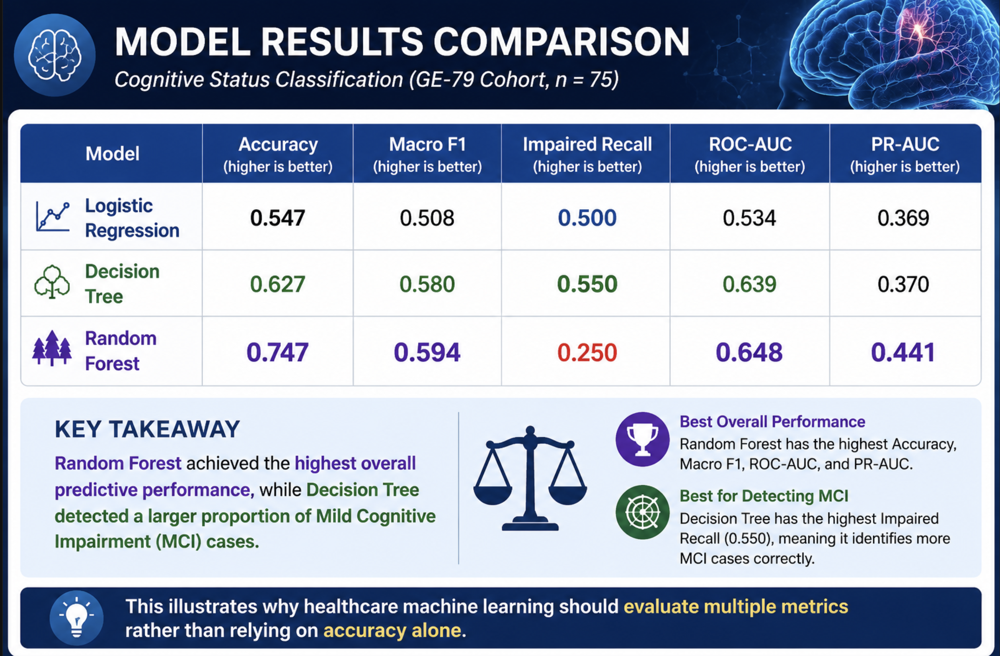
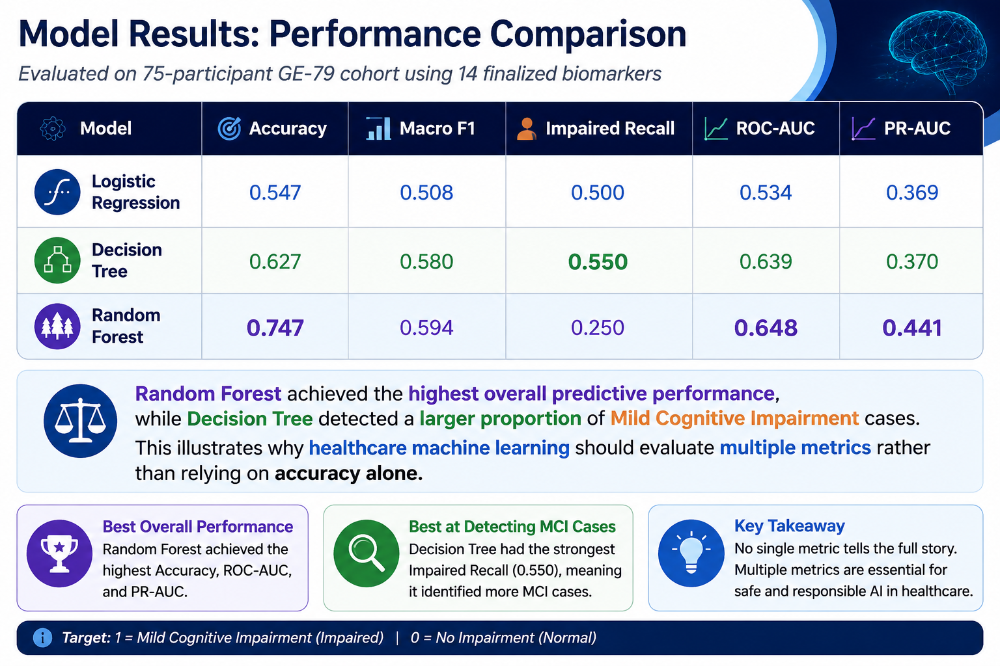

Data Visualizations & Streamlit
Instructions: Visit the Streamlit visualizations at the links below to review the interactive GE-79 model dashboards, feature-selection page, and bias detector reports.
Featured Model Results Visuals


Streamlit Visualization Links
- Model 0 - Feature Selection via Python: https://ai4all-diabetes-ml-model-0-features.streamlit.app/
- Bias Detector Reports: https://i4all-diabetes-ml-bias-report.streamlit.app/
- Model 1 - Logistic Regression: https://ai4all-diabetes-app-ml-model-1-logistic-regression.streamlit.app/
- Model 2 - Decision Tree: https://ai4all-diabetes-app-ml-model-2-decision-tree.streamlit.app/
- Model 3 - Random Forest: https://ai4all-diabetes-app-ml-model-3-random-forest.streamlit.app/